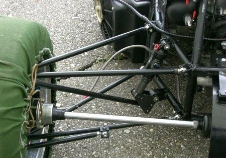
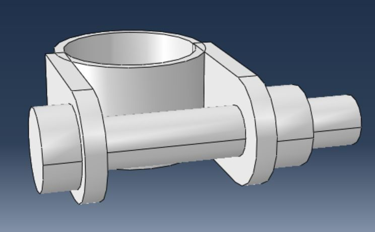
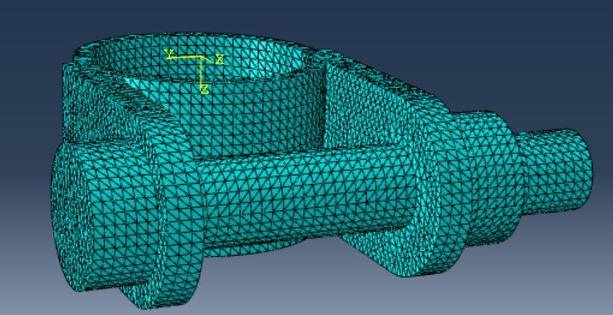
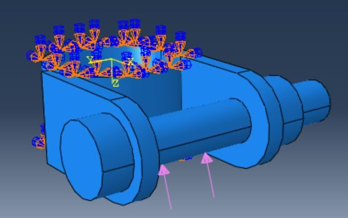
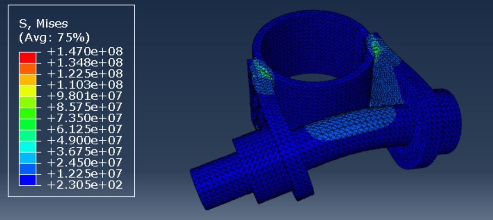
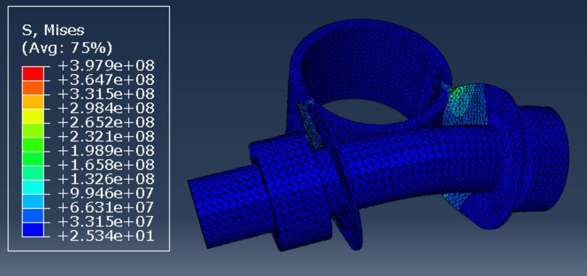
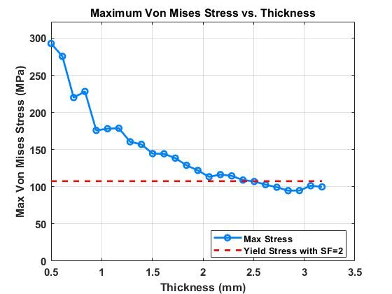

The problem
The control arms attach to the chassis through ball joints bolted between pairs of welded steel tabs. The tabs have to survive race loads, but every gram on a student car counts. The question: how thin can they go while staying below yield with a safety factor of 2?
The tool
In ES128 (Computational Solid and Structural Mechanics) we built an FEA program in MATLAB that reads Abaqus input files, classifies the element types and solves each element. I built on it so the program takes a range of tab thicknesses and a step count, rebuilds and re-constrains the model for each thickness, solves it, and plots peak stress against thickness.








Model
- Geometry: chassis tube section, left and right tabs, bolt and nut, merged into one part to avoid contact errors
- Material: AISI 304 stainless (E = 190 GPa, yield 215 MPa)
- Mesh: C3D10 second-order tets, about 50,000 elements
- Load: 340 kg car × 3 g bump = 10,006 N, split over 16 mounts = 625 N per mount
Result
The 3.175 mm baseline peaked around 100 MPa at the tab-to-tube joint. Sweeping from 3.175 mm down to 0.5 mm in 25 steps showed stress climbing sharply below 2.5 mm. At 2.5 mm the peak was about 106 MPa, inside the safety factor of 2, for a 7.3% lighter mount. Small on one car, but the same tool applies anywhere strength trades against weight or cost.





